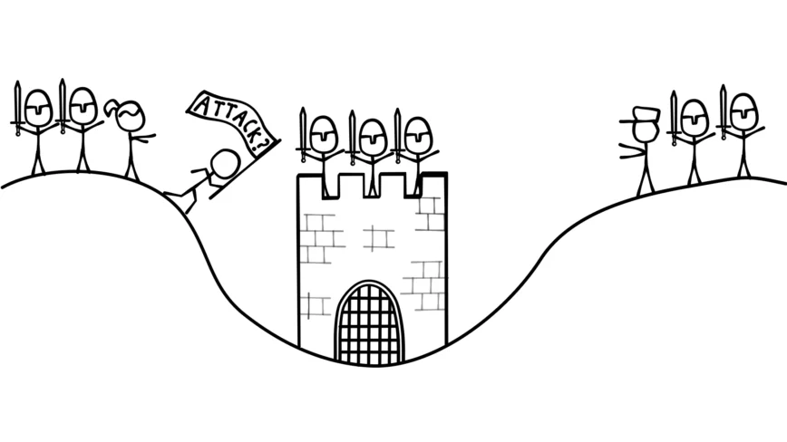

First, what are distributed systems?
First, what are distributed systems?
"A distributed system is a collection of independent computers that
appears to its users as a single coherent system." - Andrew S. Tanenbaum
"A distributed system is a collection of independent computers entities that
appears to its users as a single coherent system." - Andrew S.
Tanenbaum
So, why does the field exist?
Some definitions and terminology...
What are the components of a system?

- A system is a set or processes (nodes) that are interconnected and hence can communicate with
one another
- Typically, we consider each process to be a server (i.e., servers information) and/or a client
(asking for information)
What are the metrics for a 'good' distributed system?
- Aim for:
- Reliability - fulfils specification during the period of operation
- Availability - fulfils specification over an indefinite period
- While minimizing
- Message complexity - the amount of messages (i.e. network activity) needed to solve a
problem
- Time complexity - amount of processing needed to solve a problem
Chain of failure
Fault --> Error --> Failure
Now, how do we model a distributed system?
System model
| Model |
Definition |
| Synchronous |
There exists a known upper bound on communication (operates in lockstep) |
| Partially synchronous |
There is an unknown upper bound on the delay of a message (this is mostly how the
internet operates) |
| Asynchronous |
There is no upper bound on the delay of a message |
Failure model
| Model |
Definition |
| Link |
Failure happens during the transmission of a message |
| Stop |
Process fails (also known as crash failure) |
| Byzantine |
A process fails in an arbitrary way |
Our first problem in distributed systems - consensus
Distributed processors are required to reach a common decision, even if they initially disagree on what that decision ought to be


Contextualising

Distributed systems superstars and good resources